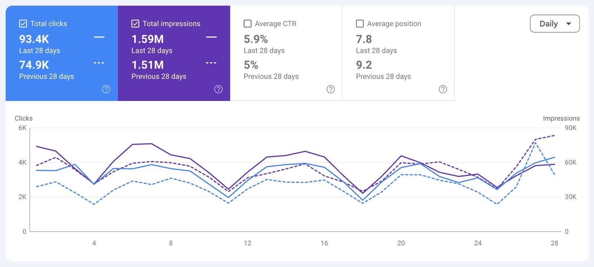

Building AI systems.
Connecting them to
real business outcomes.
I'm Abdulrahman Almuharb, an AI Engineer working across LLM orchestration, machine learning, Arabic NLP, and data-driven applications. My portfolio combines hands-on engineering with business context from the insurance industry.
From AI-assisted analysis
to business visibility.
Designed a Python-based, LLM-powered SEO intelligence workflow to extract and assess Arabic insurance content, analyze competitive opportunities, and review content readiness.
Observed site-level Google Search Console performance during two consecutive 28-day periods. These results are contextual business evidence, not a controlled attribution of all gains to the AI workflow.
View original performance evidence ↗Separate screenshot/vision experiments also exist; they are not represented here as part of the integrated core pipeline. The archived critic output indicated partial readiness, not production deployment.
More than one
kind of AI problem.
Bank Fraud Detection
Risk-based fraud detection with imbalanced classification, evaluation focused on precision-recall, and RAPIDS-based GPU workflows.
Sitr · Privacy-First NLP
Arabic student-note privacy workflow centered on detecting and redacting personal identifiers using transformer-based token classification.
SafeFactory
Predictive maintenance exploration for equipment failure, combining machine-learning risk estimation with an RAG-assisted information workflow.
Laptop Price Prediction
End-to-end regression and model comparison with an interactive Streamlit interface for estimating laptop prices.
Show the work.
Show the source.
The screenshot below is the original Google Search Console comparison supplied for the insurance engagement. The headline metric uses the displayed rounded values: (93.4K − 74.9K) ÷ 74.9K = 24.7%.
Evidence scope: website-level organic performance. The screenshot does not isolate specific pages, establish deployment timing, prove conversions, or demonstrate causal impact from a single AI intervention. Technical architecture is based on recovered project scripts and archived outputs.
Open original screenshot at full size ↗
Engineering depth.
Business fluency.
My background combines Computer Information Systems studies at King Saud University, AI and data science training at Tuwaiq Academy, and practical experience working on AI-assisted workflows in an insurance business context.
I'm interested in roles where model evaluation, practical deployment, trustworthy NLP, and clear business requirements come together.